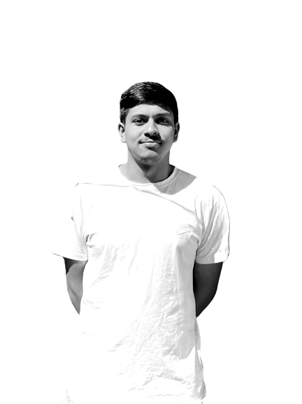

About Me
Education:
- Pursuing a Bachelor's degree in Information Management (BIM).
- Keen interest in design and technology.
- Comprehensive understanding of data management, system analysis, and IT project management.
- Well-prepared to tackle complex challenges in the tech industry.
Skills:
- Skilled in creating design prototypes using tools like Figma.
- Combines management and technical skills for strategic and practical information management.
Politics:
- Keen interest in Nepali politics.
- Actively follows political developments and current events in Nepal.
- Engages in discussions of political issues and their impact on society.
Cricket:
- Enjoys watching international and domestic cricket matches.
- Follows major cricket tournaments.
- Keeps up with the performance of favorite players and teams.
Football:
- Passionate about following major football leagues and tournaments.
